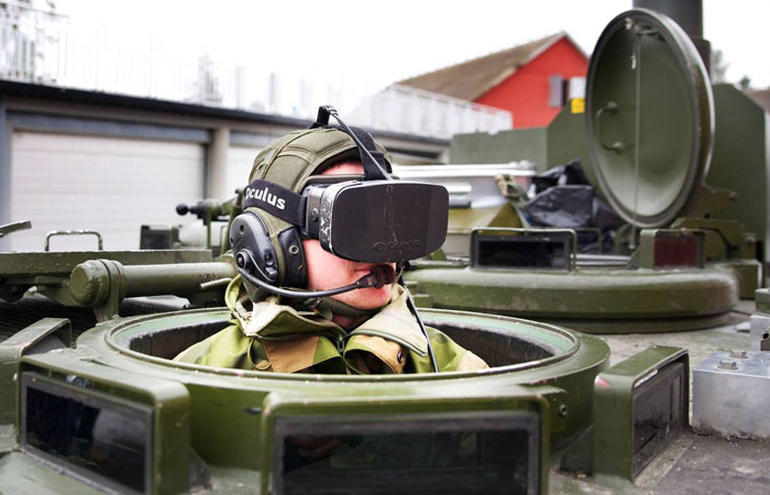
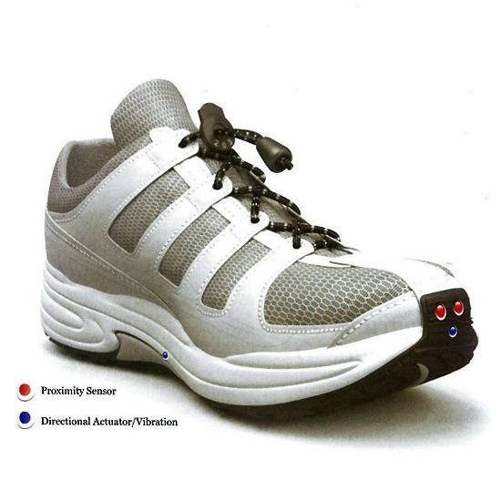
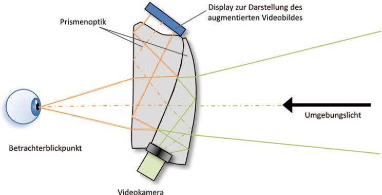
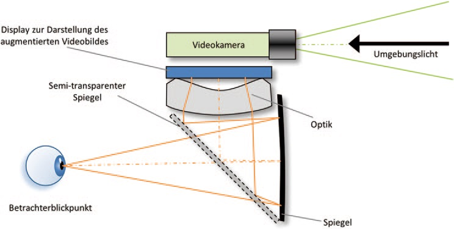

Möglichkeiten immersiver Erfahrungen in virtual und augmented Reality
Bachelorarbeit 'Imersiv Augmented Reality'
Maurus Dähler
,
Überblick Vortrag
- Hintergründe zu Virtual und Augmented Reality
- Übersicht ausgewählter VR/AR Projekte
- State of the art VR/AR-Technologie
- Arbeiten mit Unity und Oculus Rift
- Q&A
- Live Demo
Hintergründe zu Virtual und Augmented Reality
''Virtual Reality (VR) refers to the use of three-dimensional displays and interaction devices to explore real-time computer generated environments.''
''Virtual Reality refers to immersiv, interactive, multi-sensory, viewer-centered, three-dimensional computer generated environments and the combination of technologies requiered to build these environments.''
Wie wird Immersion gesteigert?
- Sinneseindrücke möglichst durch den Computer generieren
- Möglichst viele Sinne sollen angesprochen werden
- Die Ausgabegeräte sollen den Nutzer vollständig umgeben
- Die Ausgabegeräte sollen eine "lebendige" Darstellung bieten
Vorstellung ausgewählter Projekte
LifeClipper2

Schweissmaske der Zukunft


Panzer aus Glas

AR für Blinde

State of the art VR/AR-Technologie
- Video See-Through
- Optisches See-Through
- Projektionsbasierte AR
Video See-Through
 
Oculus Rift